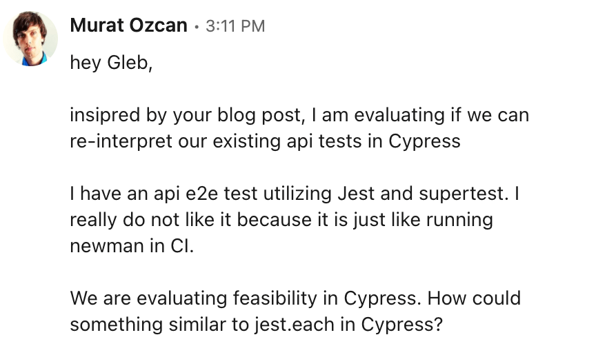
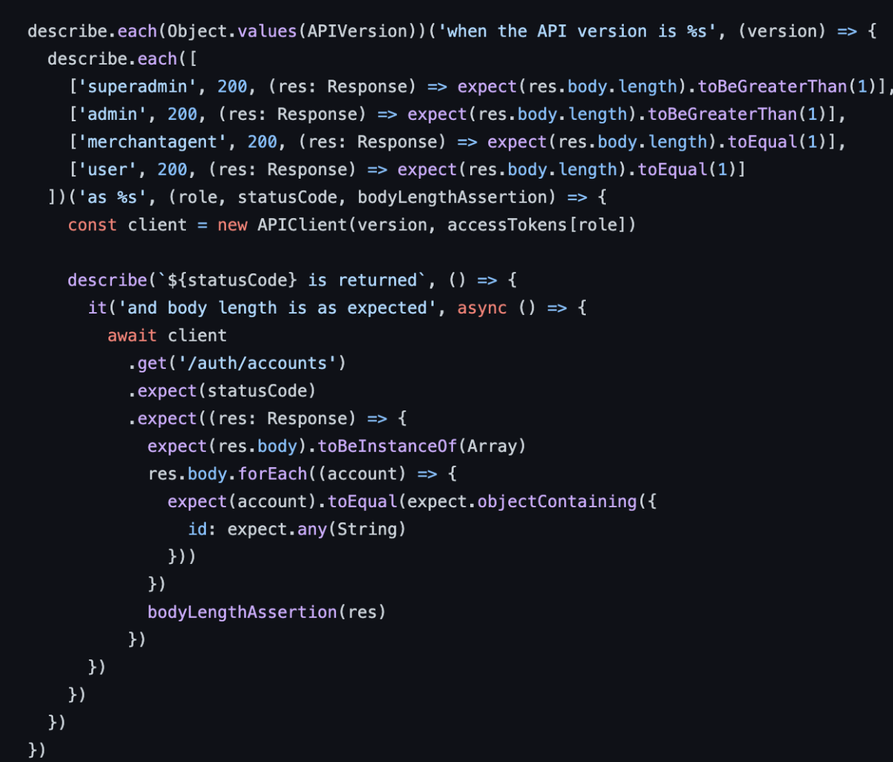
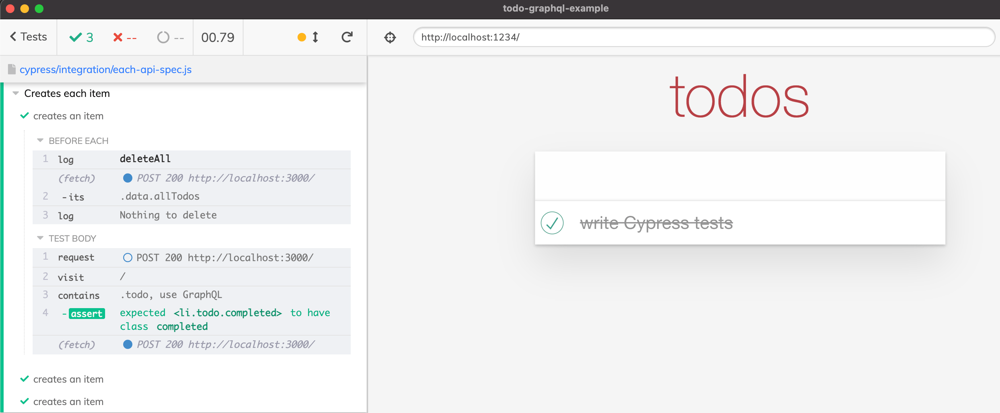
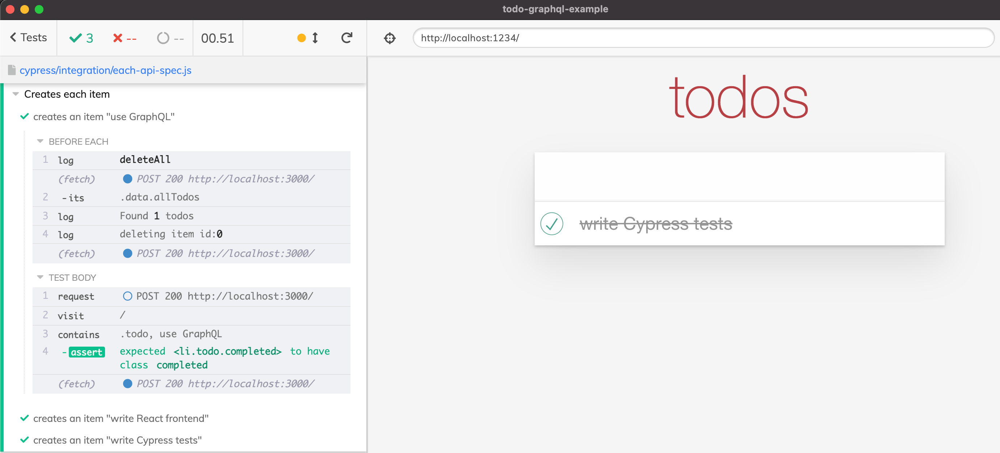
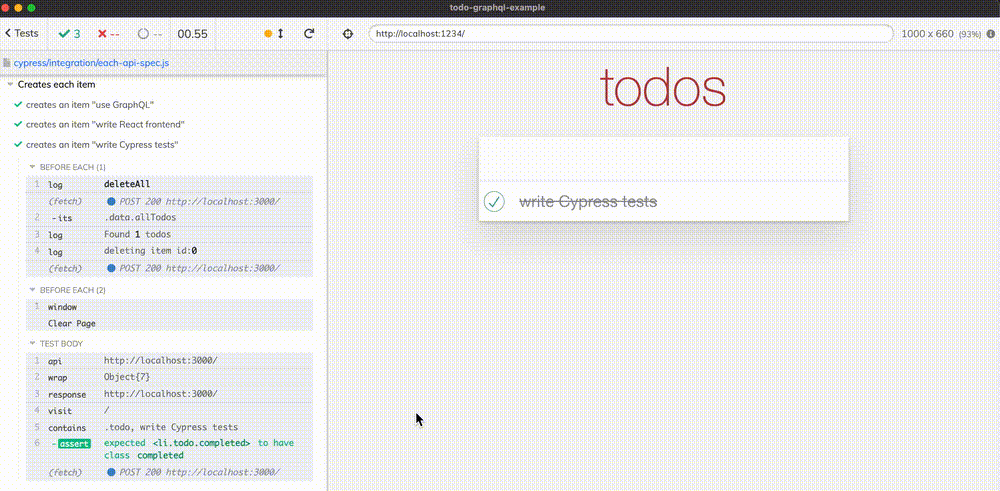

Recently a friend of mine Murat Ozcan has asked me about using Cypress for performing API tests. Murat always goes straight to the source for Cypress answers.

The second screenshot is giving an example of the ".each" feature Murat iz looking for. Given an array of items, it generates a separate describe block with the title formatted using the data.

I am a big believer in using Cypress for API tests, see my blog post Post not found: api-testing-with-server-logs, but I do agree - jest.each does look nice. Every time you import a JSON fixture with lots of test cases, iterating over it to create a separate test sure is nice, see the post Dynamic Tests From Cypress Fixture. Of course, Cypress uses Mocha test engine, where .each is not built-in, instead it comes from a plugin mocha-each. Is it hard to implement it ourselves?
Note: Murat and I have done a very nice webinar together, check it out How Siemens SW Hub increased their test productivity by 38% with Cypress.
Own implementation
Making a helper like it.each is not difficult. Let's look at the example
1 | it.each([1, 2, 3])('%d is a number', (x) => { |
From the above code, you can guess the signature of the it.each method. It takes an array and must return a function. That function expects two arguments: a title string pattern, and a callback function. The string pattern needs the value "x" to become the final string (we can use the Node's util.format method for this). The callback function is almost like the standard it callback function, except it needs the argument x applied. Great. Here is our implementation (ignore multiple arguments for now)
1 | // standard Node module "util" has "format" function |
You can find my implementation at bahmutov/cypress-each. Let's try using it.
Example application
Let's take an example application with GraphQL API. We want to confirm the GraphQL endpoint is working correctly. Thus we want to hit it with our requests and confirm the responses.
🔎 You can find the source code for this blog post in bahmutov/todo-graphql-example repo.
First, let's add my API testing plugin cy-api and cypress-each helper.
1 | $ npm i -D @bahmutov/cy-api cypress-each |
I have created each-api-spec.js where we create each item one by one
1 | // adds "describe.each" and "it.each" helpers |
The tests pass

We need a better title for each test. Currently we pass an object into the callback, but we really want to use the title property to name the test. Let's extract it and keep next to the object. Let's look the helper methods from Lodash bundled with Cypress to create pairs of values to be passed to it.each callback. The first value will be the title from the object, the second will be the object itself.
1 | const titles = Cypress._.map(data.allTodos, 'title') |

Much better.
Api tests
We are using the cy.request command to execute the HTTP request. Let's use the wrapper provided by @bahmutov/cy-api plugin to make the same request, but output the request and response to the browser. This will make understanding the tests much simpler, especially as they run on CI. All we need to do is to replace cy.request with cy.api command
1 | // adds the "cy.api" command |
To better see the request and the response, let's Visit The Blank Page Between Cypress Tests.
1 | beforeEach(() => { |
Now we should see each request going to the server, before visiting the page shows the web application. We can inspect the results by hovering over the "API" command.

Nice.
☢️ If we load the list dynamically using cy.fixture, cy.request, cy.api, or any other Cypress command, then the tests are already running, and it is too late to add new tests. Thus we need to load the fixture before any tests execute.
Update 1: it.each example
Recently, I have recorded a video showing how to create multiple separate tests using it.each where each test checks if a particular selector is valid. Find the video at https://youtu.be/utPKRV_fL1E or watch it below.